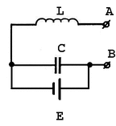

Невидимость человеческого тела.
( Теория, практические опыты для начинающих )
Уважаемые господа. Данный документ предназначен исключительно для
личного использования и постановки экспериментов своими силами. Никакое
промышленное внедрение изложенных здесь принципов или публикация данного
документа без согласия изобретателя не допускается.
1. Введение.
В данном руководстве рассмотрен практический способ достижения
оптической невидимости. Дана схема автономного электронного устройства,
обеспечивающего испытуемому полную невидимость для невооруженного глаза.
Устройство работает от батарейки и умещается в кармане.
Кроме того, статья содержит рекомендации и предостережения по использованию
невидимости.
2. Принципы.
Главный используемый принцип - побочные эффекты интерференции
электромагнитных колебаний видимой части спектра и радиоволн средневолнового
диапазона. Большинство положений данного документа следуют из теоретической
физики, хотя некоторые технические параметры подбирались опытным путем
в течение длительного времени.
3. Теоретическое обоснование оптической невидимости.
Для того чтобы понять, что такое "невидимость", целесообразно сперва
разобраться, а что же такое "видимость". В вакууме или в прозрачной среде
лучи света распространяются прямолинейно. Однако, если луч встречает
преграду, он трансформируется, т.е, отражается, преломляется, поглощается.
Попав в человеческий глаз такой видоизмененный луч и фиксируется органами
зрения. В этом заключается "видимость". Однако, все это справедлививо для
непрозрачных предметов. Зато проходя через тонкое стекло луч света почти не
претерпевает изменений и из за этого такое стекло невидимо.
Таким образом, наша задача сделать так, чтобы любой луч, упавший на
человеческое тело не трансформировался, а продолжал свой путь в том же
направлении, с той же яркостью и спектральной частотой, будто бы он прошел
через тонкое стекло.
Сделать человеческое тело прозрачным нельзя. Но можно заставить луч света
обойти тело и продолжать движение в том же направлении. Представьте себе
тонкую струю воды, падающую вертикально вниз. Подставим под струю мячик от
настольного тенниса. Вода попав на шарик стечет по его поверхности, а снизу
опять превратится такую же тонкую струю. И глядя на нее, можно подумать, что
струя не встречала никакой преграды. Если удастся так же поступить со
световым лучом, то мы получим "невидимость".
4. Достижение невидимости.
Световые лучи и радиоволны имеют одну и ту же природу - это электромагнитные
колебания. Разница заключается лишь в длине волны. Длина волны у видимого
света всего доли миллиметра, а радиоволны могут быть в несколько
километров длиной. От длины волны зависят и некоторые физические качества.
Например свет не может огибать препятствия. Говоря точнее - может, но
препятствия эти должны быть миркоскопическими, сопоставимыми с длиной волны.
Средние волны могут огибать человеческое тело, здания и другие объекты.
А длинные волны могут обойти даже земной шар. Однако имеется интересный
эффект. Луч света, совмещенный с радиоволной, перенимает часть ее свойств
и тоже начинает огибать препятствия. Единственная тонкость - для того чтобы
добиться такого эффекта, нужно точно рассчитать длину радиоволны в
зависимости от размера объекта.
Опытным путем получена закономерность, что световые лучи свободно огибают
человеческое тело, если оно само излучает поток радиоволн с частотой
1456 килогерц (+- 5%).
В истории известно много случаев столкновения самолетов с
радиопередающими вышками. Как правило причина кроется как раз в этом
эффекте. При определенной длине волны детали вышки утрачивают визуальную
четкость. Летчики жаловались на то, что антенны не были видны, или были
видны нерезко, размыто.
5. Невидимость на практике.
Как уже было сказано выше, для достижения невидимости нужно превратить
человеческое тело в разновидность радиопередатчика. Вот несложная
электронная схема, которую по силам собрать даже школьнику. В радиотехнике
это называется "колебательный контур".

Описание.
E - источник питания 1.5В, пальчиковая батарейка. Такой батарейки хватает
на несколько часов работы. ЗАПРЕЩАЕТСЯ ИСПОЛЬЗОВАТЬ другие, более
высоковольтные истощники питания, поскольку сильное радио излучение опасно
для здоровья. Не имеет значения, где будет плюс, а где минус.
L - катушка индуктивности.
C - конденсатор.
A,B - клеммы, к которым подключается антенна. В нашем случае это будет
человеческое тело.
Главная тонкость - подбор катушки и конденсатора таким образом, чтобы
частота излучения была 1456 КГц.
Я советую сперва найти катушку индуктивности. Как правило их много в старой
бытовой электронике. Подойдет любая. Однако на ней должна быть маркировка,
показывающая индуктивность катушки. Индуктивность измеряется в Генри (Гн).
После того как вы нашли катушку, нужно по формуле рассчитать, какой вам
нужен конденсатор.
C = 1.1961e-14 / L
Здесь L - индуктивность катушки в Генри.
C - искомая емкость конденсатора в Фарадах.
Рассчитанная таким образом схема будет излучать средние волны с частотой
1456 Кгц.
6. Использование устройства.
После того как утройства подключено к телу, наступает полная оптическая
невидимость. Подключение:
Клемму "A" нужно присоединить проводами к пяткам обеих ног и к среднему
пальцу одной из рук. Электроды на ногах легко фиксируются тугими носками.
На пальце руки удобнее закрепить провод кольцом.
Клемма "B" присоединяется к среднему пальцу другой руки и к верхней части
головы. Последнее соединение чуть затруднительно (если Вы не лысый).
Требуется хорошо прижать электрод к коже головы и зафиксировать его там
клейкой лентой.
Теперь подойдите к зеркалу. Если все в порядке со схемой, вы не увидите
своего отражения.
7. Заключение.
В заключение хочется предостеречь потенциальных невидимок от непродуманных
действий. Невидимость дает много возможностей, но всякий ли готов к ней.
Устройство испытовалось на многих людях с неизменным успехом, однако уже
тогда выявились несколько аморальных фактов. Наример Стив Р. из Бостона
бесплатно слетал в Европу, проникнув невидимым в самолет "Бритиш Аируэйз".
Марк А. вообще не придумал ничего лучшего, чем похитить портативный DVD
плэйер из магазина, а через неделю был арестован при попытке продать его.
Помните, что на Вас по прежнему распространяется законодательство США.
И вообще залог успеха в жизни не зависит от факта "поймали - не
поймали". Он зависит от вашей личной порядочности и дисциплины, а эти
понятия никак не связаны с вашими новыми возможностями. В вопросе "что такое
хорошо и что такое плохо" ничего не изменилось.
(C) *** JES 2007 *** Ю.Шимановский
http://shymanovsky.mooo.com
Назад|На главную